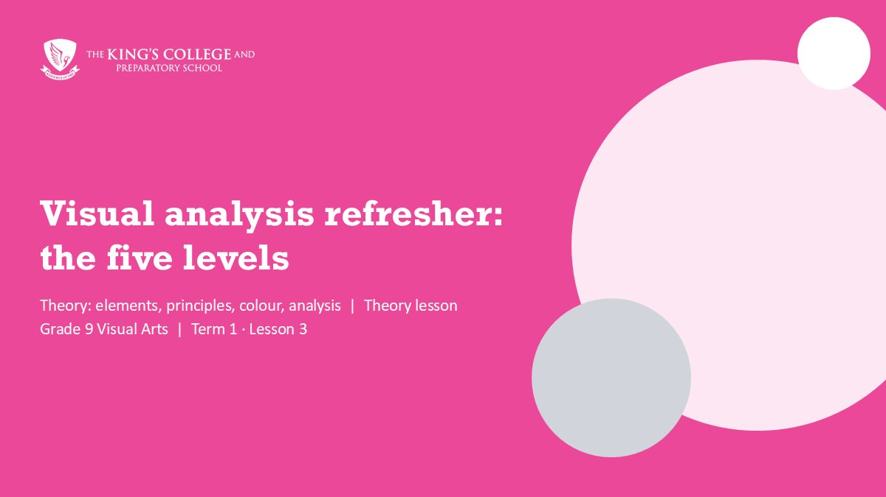

Term 1 · Lesson 3 · Theory lesson
Visual analysis refresher: the five levels
Start here
Today I will
- Know the five levels of visual analysis in order
- Use elements and principles as evidence: what, where and what it does
- Write a full analysis and peer-mark it with a checklist
Think first
Two almost-touching hands have been copied onto mugs, posters and memes. Why is such a small gap so powerful?
Words to Know
| Word | Meaning |
|---|---|
| Visual analysis | A structured way of looking at and writing about an artwork, using art vocabulary as evidence. |
| Formal analysis | Looking closely at the elements and principles and the effect they create. |
| Evidence | Something you can point to in the artwork, or a fact about it, that supports what you say. |
| Context | The time, place, culture, beliefs and events in which an artwork was made. |
| Zeitgeist | German for 'spirit of the time': the ideas, events and attitudes of the period when an artwork was made. |
| Hindsight | Looking back from today, with knowledge the artist could not have had. |
Slides

Videos
Notes
The five levels in depth, with evidence from the artwork; good and weak answers compared.
The five levels of visual analysis
- First reaction: What do you notice and feel at first glance? What is the mood?
- Formal analysis: Which elements and principles are used, where are they, and what effect do they have?
- Content: What is shown and what it means: the subject, the story and the symbols.
- Context (zeitgeist): When, where and why it was made, and what we know now with hindsight.
- Opinion supported by facts: Your judgement, backed by evidence from levels 2 to 4.
Weak and strong answers
| Weak answer | Strong answer |
|---|---|
| 'There is contrast.' | 'The dark, empty sky between the hands contrasts with the light bodies, so the gap becomes the focal point.' |
| 'It is about God and Adam.' | 'God reaches out with energy while Adam's hand hangs limp, suggesting that God gives life.' |
| 'It is old.' | 'It was painted about 1508–1512 for the Pope, when Renaissance artists studied anatomy closely.' |
| 'I like it.' | 'It succeeds because the diagonal from Adam's arm to God's arm makes one small gap feel full of meaning.' |
Remember
Say what you see, where it is and what it does.
Practical
You need: Activity Book, image on screen, peer-marking checklist
My five-level analysis of The Creation of Adam
- Write a heading: Michelangelo, The Creation of Adam, about 1508–1512, fresco.
- Level 1: two sentences about your first reaction and the mood.
- Level 2: name at least three elements or principles, say where they are and what they do.
- Level 3: describe the subject and one possible symbol.
- Level 4: give two facts about the context (the Renaissance, the Pope's commission, painting on a ceiling).
- Level 5: give your opinion with at least two reasons from levels 2 to 4.
- Swap with a partner and tick their work against the checklist; write one strength and one target.
Test yourself
- Which level of analysis uses the elements and principles?
- What does 'zeitgeist' mean?
- What must a level 5 opinion include?
Show answers
1. Level 2, formal analysis. 2. The spirit of the time: the ideas, events and attitudes of the period. 3. Reasons backed by evidence from the artwork and its context.
Finished early?
Upgrade the answer
Turn short Grade 8 answers into strong Grade 9 answers with evidence.
- Copy these short answers into your visual journal: 'There is contrast.' and 'I like it.'
- Choose an artwork from your booklet and rewrite the first answer: say what you see, where it is and what it does.
- Rewrite the second answer as a level 5 opinion with two reasons from the artwork or its context.
- Underline every element or principle word you used.